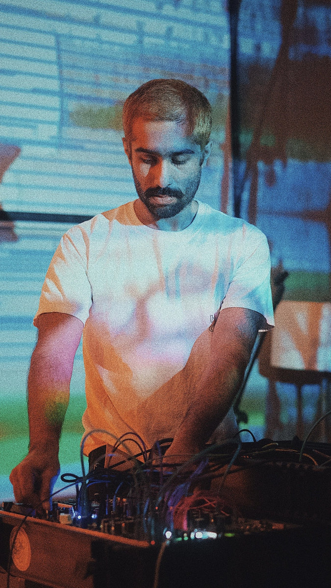

| arvonline | visual sonic projects bio contact |
"genre is a lie, only computers" |
|  |
i'm arvind srikanth, a passionate artist, engineer, and audio programmer-- with a diverse academic background rooted in materials engineering. having completed my ms in materials engineering at the university of florida in 2019, and my bs in materials engineering at the university of illinois at urbana-champaign in 2014, i've forged a unique path that blends technical expertise with creative expression. drawing upon my foundation in materials engineering, i approach my artistic endeavors with a meticulous attention to detail and a thirst for exploration. from the intricate tapestries of sound crafted through modular synthesis to the raw emotional depth of my visual art, each creation is infused with a unique blend of scientific rigor and artistic flair. in the realm of music, i harness the power of modular synthesis to sculpt sonic landscapes that transcend conventional boundaries. as an audio programmer, i leverage my engineering background to push the limits of what's possible, creating immersive soundscapes that captivate the senses and stir the soul. on the visual front, my art serves as a medium for visceral emotional release—a raw outpouring of thoughts and feelings expressed through color, form, and texture. from paper collages to digital works, each piece invites viewers to embark on a journey of introspection and discovery, exploring the depths of human experience with every brushstroke and pixel. this website serves as a canvas of my creations—a testament to the boundless possibilities that arise when art, engineering, and innovation intersect. |